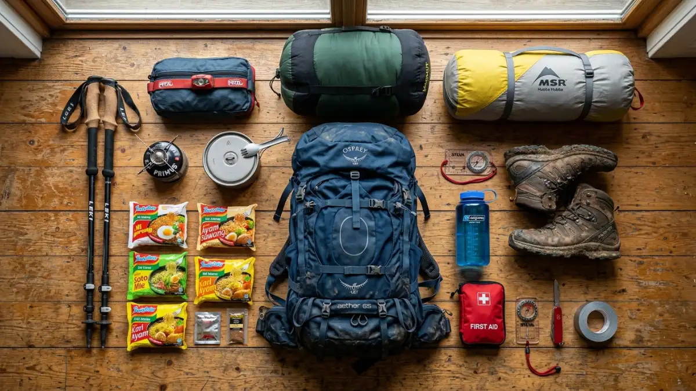
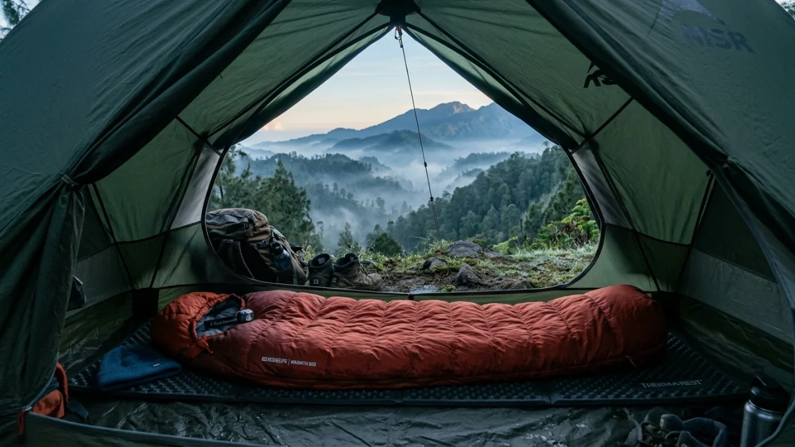

Perlengkapan camping gunung yang lengkap — kunci utama keselamatan dan kenyamanan saat mendaki di Jawa Timur.Perlengkapan camping gunung di Jawa Timur yang wajib dibawa mencakup tenda tahan angin, sleeping bag berrating dingin, sistem hidrasi, pakaian berlapis, dan kotak P3K semua disesuaikan dengan suhu malam pegunungan yang bisa turun drastis.
- Mengapa Perlengkapan yang Tepat Sangat Penting untuk Camping Gunung?
- Sleeping Bag: Item Paling Kritis dalam Perlengkapan Camping Gunung
- Tenda: Pilih yang Tahan Cuaca, Bukan Sekadar Ringan
- Sistem Layering Pakaian untuk Camping Gunung
- Perlengkapan Hidrasi dan Nutrisi
- Daftar Perlengkapan Lengkap Camping Gunung Jawa Timur
- FAQ
Mengapa Perlengkapan yang Tepat Sangat Penting untuk Camping Gunung?
Perlengkapan yang tidak sesuai kondisi gunung adalah penyebab utama kecelakaan dan kejadian darurat dalam pendakian di Jawa Timur.
Data dari Badan SAR Nasional menunjukkan bahwa sebagian besar insiden pendakian di gunung-gunung Jawa Timur melibatkan faktor kelelahan dan hipotermia dua kondisi yang sangat bisa dicegah dengan persiapan perlengkapan yang tepat.
Berinvestasi pada perlengkapan berkualitas bukan soal gaya hidup, melainkan investasi keselamatan yang nyata.
Sleeping Bag: Item Paling Kritis dalam Perlengkapan Camping Gunung
Sleeping bag yang sesuai dengan kondisi suhu gunung tujuan adalah perlengkapan paling penting dalam camping gunung di Jawa Timur karena menjadi sistem pertahanan utama tubuh terhadap hipotermia.
Rating suhu
Pilih sleeping bag yang berrating comfort minimal 0 derajat Celsius untuk camping di Ranu Kumbolo atau kawasan Bromo. Untuk kawasan yang lebih tinggi seperti Kalimati Semeru, rating minus 5 derajat Celsius lebih aman.
Material isian
Sleeping bag dengan isian down (bulu angsa atau bebek) menawarkan rasio hangatnya lebih baik dibanding bobotnya, namun kehilangan kemampuan insulasi saat basah. Sleeping bag synthetic lebih tahan lembab dan lebih mudah dirawat, cocok untuk kondisi Jawa Timur yang kadang lembab.
Bentuk
Sleeping bag tipe mummy (berbentuk seperti mumi) lebih efisien menjaga panas tubuh dibanding tipe rectangular karena tidak ada ruang udara kosong yang perlu dipanaskan tubuh.

Sleeping bag dan tenda camping di gunung — dua perlengkapan utama yang menentukan kenyamanan istirahat saat pendakian.Tenda: Pilih yang Tahan Cuaca, Bukan Sekadar Ringan
Tenda yang cocok untuk camping gunung di Jawa Timur harus tahan terhadap angin kencang, lembab, dan hujan bukan sekadar ringan dan murah.
Kriteria tenda yang wajib diperhatikan:
- Konstruksi — Tenda dome atau tunnel dengan setidaknya dua tiang silang lebih stabil menghadapi angin dibanding tenda dome satu tiang.
- Material flysheet — Pastikan flysheet (lapisan luar) berbahan minimal 1500mm hydrostatic head untuk ketahanan terhadap hujan sedang hingga lebat.
- Ventilasi — Tenda dengan ventilasi yang baik mencegah kondensasi berlebihan di dalam tenda yang bisa membuat sleeping bag dan pakaian lembab.
- Footprint — Gunakan alas tenda (groundsheet atau footprint) untuk melindungi lantai tenda dari kerusakan dan mencegah kelembaban masuk dari bawah.
Sistem Layering Pakaian untuk Camping Gunung
Sistem tiga lapisan pakaian (layering system) adalah standar internasional untuk camping di lingkungan dingin dan merupakan cara paling efisien menjaga suhu tubuh saat camping gunung di Jawa Timur.
Base layer (lapisan dasar)
Pakaian yang menempel langsung di kulit. Fungsi utamanya adalah mengalirkan keringat dari kulit ke lapisan berikutnya. Pilihlah bahan sintetis seperti polyester atau wol merino, bukan katun yang membutuhkan waktu lama untuk kering dan malah dapat mendinginkan tubuh saat dalam keadaan basah.
Mid layer (lapisan tengah)
Berfungsi sebagai insulasi untuk menjaga panas tubuh. Jaket fleece tebal atau jaket down ringan adalah pilihan umum untuk mid layer.
Outer layer (lapisan luar)
Perlindungan dari angin dan hujan. Jaket hardshell atau softshell yang windproof dan waterproof menjadi lapisan terakhir yang melindungi dari cuaca.
Perlengkapan Hidrasi dan Nutrisi
Kecukupan cairan dan energi adalah fondasi kemampuan fisik selama camping gunung dan sering diabaikan pendaki yang terlalu fokus pada perlengkapan teknis.
Panduan hidrasi dan nutrisi untuk camping gunung:
- Bawa minimal 2 hingga 3 liter air per orang per hari untuk pendakian aktif.
- Sumber air di jalur pendakian Jawa Timur seperti Sumber Mani di Semeru atau mata air di jalur Arjuno harus selalu dipurifikasi sebelum diminum menggunakan tablet klorin, filter air, atau dengan merebus.
- Bawa makanan berkalori tinggi dan ringan: energy bar, kacang-kacangan, cokelat, dan makanan beku kering (freeze-dried meal) yang bisa dimasak hanya dengan air panas.
- Kompor ultralight dan bahan bakar gas canister ringan adalah solusi memasak yang efisien di gunung.
Daftar Perlengkapan Lengkap Camping Gunung Jawa Timur
Berikut daftar perlengkapan yang komprehensif untuk camping gunung di Jawa Timur:
Shelter dan tidur
Tenda dome, sleeping bag, matras insulasi, footprint tenda.
Pakaian
Base layer, mid layer fleece, jaket hardshell, celana gunung, kaos kaki wool ganti, buff atau balaclava, gloves, topi hangat.
Navigasi dan keselamatan
Peta jalur, kompas, GPS atau smartphone dengan offline map, headlamp plus baterai cadangan, peluit darurat, kotak P3K lengkap, emergency blanket.
Hidrasi dan memasak
Botol air minimum 2 liter, alat purifikasi air, kompor gas portable, bahan bakar gas, peralatan makan ringan.
Carrier dan aksesoris
Carrier 50 hingga 70 liter dengan hip belt yang baik, rain cover carrier, dry bag untuk barang elektronik, kantong sampah.
Perlengkapan camping gunung yang tepat adalah investasi untuk keselamatan, bukan pengeluaran gaya hidup semata. Utamakan sleeping bag yang berkualitas, tenda yang tahan terhadap cuaca, dan sistem layering pakaian sebelum mempertimbangkan aksesoris lainnya. Perlengkapan yang baik akan membuat pengalaman camping di gunung-gunung Jawa Timur jauh lebih aman dan nyaman.
FAQ — Perlengkapan Camping Gunung di Jawa Timur
Berapa berat ideal carrier yang dibawa saat camping gunung?
Secara umum, total berat carrier tidak disarankan melebihi 25 hingga 30 persen dari berat badan pendaki. Untuk pendaki dengan berat 60 kg, batas aman adalah sekitar 15 hingga 18 kg termasuk air dan makanan.
Apakah perlengkapan camping bisa disewa di basecamp Semeru atau Bromo?
Ya, di beberapa basecamp populer seperti Ranu Pani (Semeru) dan kawasan Bromo tersedia penyewaan perlengkapan camping seperti tenda, sleeping bag, dan trekking pole. Namun kualitas dan kondisinya bervariasi, sehingga membawa perlengkapan sendiri selalu lebih disarankan.
Apakah power bank diperbolehkan di kawasan camping gunung?
Power bank diperbolehkan dan bahkan sangat disarankan untuk menjaga daya handphone dan headlamp. Pilih power bank berkapasitas minimal 10.000 mAh dan simpan di dalam sleeping bag saat malam agar tidak cepat habis karena suhu dingin.